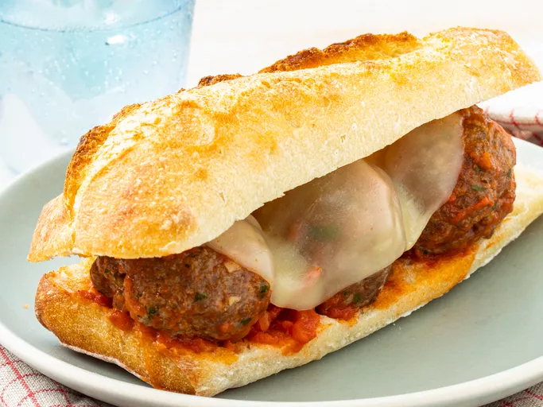

Sándwich de albóndigas

Submarino de albóndigas elaborado con albóndigas caseras deliciosamente sazonadas, salsa de tomate y queso provolone derretido, servido en una baguette ligeramente tostada.
Ingredientes:
- 1 libra de carne molida
- ¾ taza de pan rallado
- 1 huevo grande , batido
- 2 dientes de ajo, picados
- 2 cucharadas de queso parmesano rallado
- 2 cucharadas de perejil fresco picado
- 2 cucharaditas de condimento italiano seco
- 1 baguette francesa
- 1 cucharada de aceite de oliva virgen extra
- ½ cucharadita de ajo en polvo
- 1 pizca de sal, o al gusto
- 1 frasco (14 onzas) de salsa para espaguetis
- 4 rebanadas de queso provolone
Preparación:
- Precalienta el horno a 350 grados F (175 grados C).
- Combine la carne molida, el pan rallado, el huevo, el ajo, el queso parmesano, el perejil y el condimento italiano en un tazón grande. Mezclar con las manos hasta que esté bien combinado. Forme 12 albóndigas con la mezcla y colóquelas en una fuente para horno.
- Hornee las albóndigas en el horno precalentado hasta que estén bien cocidas, de 15 a 20 minutos. Un termómetro de lectura instantánea insertado en el centro debe indicar al menos 160 grados F (71 grados C).
- Mientras se cocinan las albóndigas, corte la baguette por la mitad a lo largo y ábrala como un libro. Retire y deseche un poco del pan del interior para hacer un hueco para las albóndigas.
- Unte la baguette con aceite de oliva y sazone con ajo en polvo y sal. Coloque la baguette en una bandeja para hornear, abierta y con los lados engrasados hacia arriba.
- Cuando a las albóndigas les queden 5 minutos, mete la baguette en el horno y cocina hasta que esté ligeramente tostada.
- Mientras tanto, caliente la salsa para espaguetis en una cacerola a fuego medio.
- Retire las albóndigas del horno. Use una espumadera para transferirlos a la salsa picante; mezcle suavemente para cubrir con la salsa.
- Coloque las albóndigas y la salsa en un lado de la baguette, colocando las albóndigas en el hueco. Cubra con rodajas de queso provolone.
- Regrese al horno hasta que el queso se derrita, de 2 a 3 minutos.
- Deje enfriar un poco y luego córtelo en 4 sándwiches.